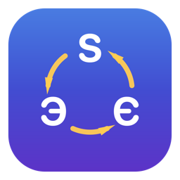

The macOS & Windows app that notices the language you're typing and fixes the keyboard layout — across English, Ukrainian, and Russian.
Switcher3way renders your keystrokes through every installed layout, validates each candidate against its own language's dictionary, and switches only when there's a single unambiguous winner — automatically as you type, or on a key tap.
Most switchers flip between two layouts. Switcher3way considers all your installed layouts at once and picks the right one.
Words valid in more than one language (like там in Ukrainian & Russian) are left untouched — no wrong "corrections".
Fix words automatically as you type, or tap a trigger key to convert the last word or selection — tap again to undo.
Per-app exceptions, never/always-convert word lists, password-manager safety, and pause (30 min / 1 h / until restart).
Menu-bar status header, per-app layout memory, an optional layout flag at the cursor, and a UI localized in 16 languages.
Everything runs locally on your device. No accounts, no telemetry, no network.
git clone the repo — macOS: bash build_app.sh; Windows: pwsh windows/build-msi.ps1. See the README.